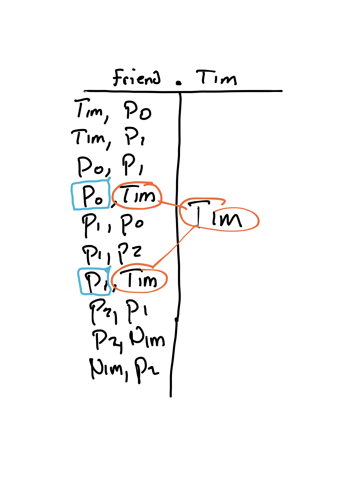
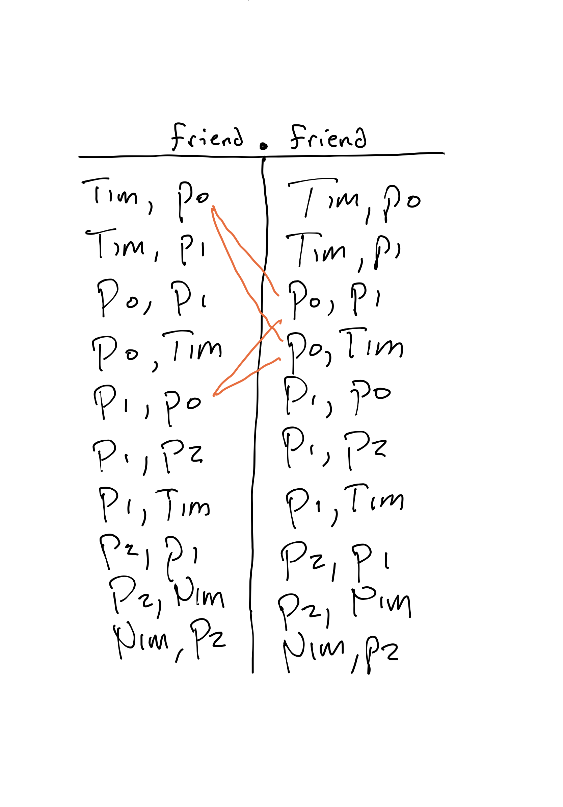
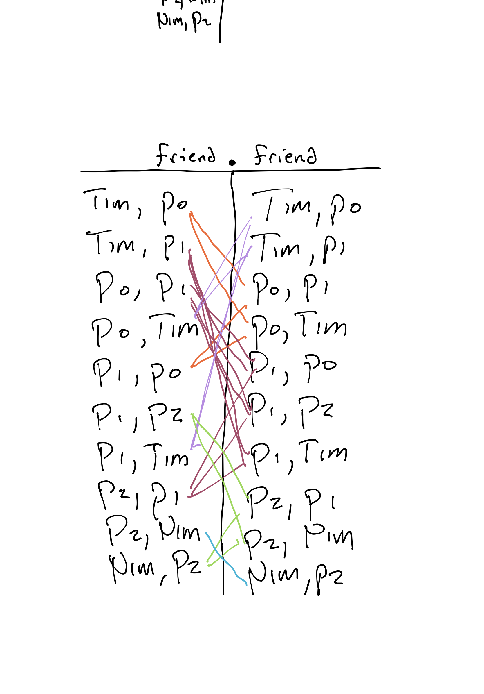

Relations and Reachability¶
Consider this small Relational Forge model:
#lang forge
sig Person {
friends: set Person,
followers: set Person
}
one sig Nim, Tim extends Person {}
pred wellformed {
-- friends is symmetric (followers might not be)
all disj p1, p2: Person | p1 in p2.friends implies p2 in p1.friends
-- you cannot follow or friend yourself
all p: Person | p not in p.friends and p not in p.followers
}
run {wellformed} for exactly 8 Person
Let's run it, get a reasonably large instance, and try to figure out how to express some goals in the evaluator.
EXERCISE: You'll be following along with each of these questions. Use the evaluator heavily---it's great for figuring out what different expressions evaluate to.
Expression: Nim's followers¶
Think, then click!
This is just Nim.followers.
Formula: Nim is reachable from Tim via "followers"¶
Think, then click!
We can use the reachable built-in: reachable[Nim, Tim, followers].
Expression: Nim's followers' followers¶
Think, then click!
Another application of the field! Nim.followers.followers.
But wait, what does this really mean? Since Nim.followers is a set, rather than a Person, should I be able to apply .followers to it? If we try this in the evaluator, it works, but we're no longer just doing a "field access"; something more must be going on.
Formula: Nim is reachable from Tim via the inverse of "followers" (what we might call "following")?¶
Think, then click!
Hmm. This seems harder. We don't have a field called following, and the reachable built-in takes fields!
...it does take fields, right? Or might it take something more flexible? Can we use set operations to adjust the potential edges that reachable looks at?
To figure that out, let's try something else.
Formula: Nim is reachable from Tim via followers, but not including Tim's friends?¶
Think, then click!
We might try reachable[Nim, Tim, (followers-Tim.friends)] but this will produce an error. Why? Well, one reason we might give is:
...because
followersis a field butTim.friendsis a set.
But is that the real answer? The error complains about "arity": 2 vs 1. Let's type those two expressions into the evaluator and see what we get. For followers, we get a set of pairs of people. But Tim.friends is a set of singletons.
Arity, Relations, and Tuples
Arity is another word for how wide the elements of a set are. Here, we'd say that followers has arity 2 since elements of followers are pairs of atoms. Similarly, Tim.friends has arity 1 since its elements are singletons. So Forge is pointing out that taking the set difference of these two makes no sense; their elements are shaped differently.
When we're talking about sets in this way, we sometimes call them relations. E.g., the followers field is a binary relation because it has arity 2. We'll call elements of relations tuples. E.g., if Nim follows Tim, the tuple (Tim, Nim) would be present in followers.
In Relational Forge, reachable doesn't take "fields"; it takes relations. Specifically, binary relations, which define the steps it can use to connect the two objects. That's the fact we'll use to solve the 2 problems above.
(Attempt 2) Formula: Nim is reachable from Tim via the inverse of "followers" (what we might call "following")?¶
Now that we know followers is a binary relation, we can imagine flipping it to get its inverse. How can we do that? Well, there are multiple ways! We could write a set-comprehension:
The order matters here! If p1 is in p2.followers, then there is an entry in the relation that looks like (p2, p1). We could make this more explicit by writing:
Now that we know followers is a set, this makes sense! The product (->) operator combines p2 and p1 into a binary tuple, which may (or may not) be in followers.
Forge provides an operator that does this directly for binary relations: transpose (~). So we could write instead:
Which should you use? It's up to you! Regardless, we could now answer this question with:
(Attempt 2) Formula: Nim is reachable from Tim via followers, but not including Tim's friends?¶
Everything is a set, so let's build the subset of followers that doesn't involve anyone in Tim.friends. We can't write followers-(Tim.friends), since that's an arity mismatch. Somehow, we need to remove entries in followers involving one of Tim's friends and anybody else.
One way is to use the product operator to build the binary relation we want reachable to use. E.g.:
Tip
You may notice that we've now used -> in what seems like 2 different ways. We used it to combine specific people, p1 and p2 above into a single tuple. But now we're using it to combine two sets into a set of tuples. This flexibility is a side effect of sets being the fundamental concept in Relational Forge:
* the product of ((Tim)) and ((Nim)) is ((Tim, Nim));
* the product of ((Person1), (Person2)) and ((Person3), (Person4)) is ((Person1, Person3), (Person1, Person4), (Person2, Person3), (Person2, Person4)).
Formally, -> is the cross-product operation on sets.
You'll see this apparently double-meaning when using in and =, too: singletons are single-element sets, where the element is a one-column tuple.
What is Dot, Really?¶
In Relational Forge, the dot operator is called relational join. The expression A.B combines two arbitrary relations A and B by seeking out rows with common values in their rightmost (in A) and leftmost (in B) columns. Concretely, if A is an \(n\)-ary relation, and B is \(m\)-ary, then A.B equals the \(n+m-2\)-ary relation:
That's a lot, so let's work through some examples. Suppose that we have the following relation for the friend field of Person:
| column 1 | column 2 |
|---|---|
Tim |
Person0 |
Tim |
Person1 |
Person0 |
Person1 |
Person0 |
Tim |
Person1 |
Person0 |
Person1 |
Person2 |
Person1 |
Tim |
Person2 |
Person1 |
Person2 |
Nim |
Nim |
Person2 |
We know that join can often work like field access. So we'd expect Tim.friend to produce a set containing Person0 and Person1. Why? Because we see Tim in the left column of 2 rows, and the right columns of those rows contain Person0 and Person1.
But what about each of the following?
Try the evaluator!
To build intuition for ., try expressions like this in the evaluator after reading the following examples.
friend.Tim¶
Here we run the same process that gave us a value for Tim.friend, but in reverse. Which rows do we see Tim in the right column?

Because friend is symmetric, it's the same: friend.Tim is the same as Tim.friend, a set containing Person0 and Person1.
friend.friend¶
Before trying to compute the value, first answer:
Exercise: What is the arity of friend.friend?
Think, then click!
Well, friend has arity 2, and a join subtracts one column from each side. So we expect friend.friend to have arity 1+1=2.
Now, what's the value? Start by looking for matches. Here are some of them (the ones on Person0):

Continuing, we'll find matches on Person1, Tim, and others. Because some people have a lot of friends, the graph is getting difficult to read, but notice what's happening: we're identifying matching pairs of rows in each relation.

Finally, we generate a new row in the result for every pair of matching rows, deleting the inner columns we matched on: Tim->Person1 is in the result because Tim->Person0 is in friends (the left-hand side of the join) and Person0->Person1 is in friends (the right-hand side of the join). We'll get one row for every match (but we won't keep duplicates):
| column 1 | column 2 |
|---|---|
Tim |
Person1 |
Tim |
Person2 |
Tim |
Tim |
Person0 |
Person0 |
Person0 |
Person1 |
Person0 |
Person2 |
Person0 |
Tim |
Person1 |
Person0 |
Person1 |
Person1 |
Person1 |
Tim |
Person1 |
Nim |
Person2 |
Person0 |
Person2 |
Person2 |
Person2 |
Tim |
Nim |
Nim |
Nim |
Person2 |
This is the set of friend-of-friend relationships. If we computed friend.friend.friend, we'd get the friend-of-friend-of-friend relationships, and so on.
TODO: double-check this
Exercise: What about Tim.Tim?
Think, then click!
This will give an error because the result has arity 0.
How Reachability Works¶
If we wanted to encode reachability without using the built-in reachable predicate, we could start by writing a helper predicate:
pred reachable2[to: Person, from: Person, via: Person -> Person]: set Person {
to in
from.via +
from.via.via +
from.via.via.via
-- ...and so on...
}
But we always have to stop writing somewhere. We could write the union out to 20 steps, and still we wouldn't catch some very long (length 21 or higher) paths. So we need some way to talk about unbounded reachability, or at least reachability up to a path length that's influenced by the problem bounds.
Forge's reachable built-in does this, but it's just a facade over a new relational operator: transitive closure (^R).
Transitive Closure (^)¶
The transitive closure ^R of a binary relation R is the smallest binary relation such that:
- if
x->yis inR, thenx->yis in^R; and - if
x->zis inRandz->yis in^Rthenx->yis inR.
That is, ^R encodes exactly what we were trying to achieve above. The reachable[to, from, f1, ...] built-in is just syntactic sugar for:
You might remember that reachable always evaluates to true if we give none as its first argument. This is because of the translation above: if to is the empty set, then it is a subset of anything.